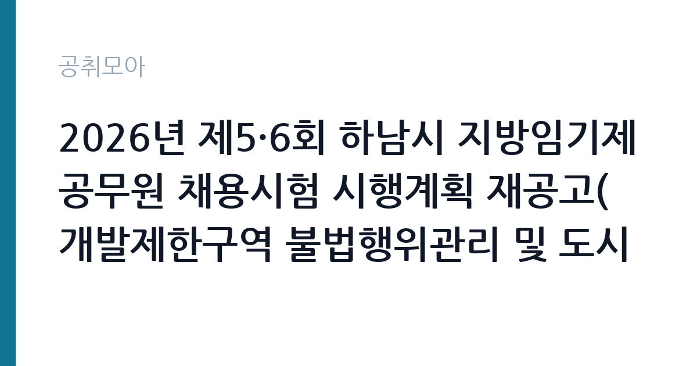

[지자체] 2026년 제5·6회 하남시 지방임기제공무원 채용시험 시행계획 재공고(개발제한구역 불법행위관리 및 도시지역내 위반건축물 관리)
경기도 하남시 · 경기 · 마감 2026-11-06 (D-10) · 출처 나라일터

한눈에 보는 모집 조건
| 기관 | 경기도 하남시 |
|---|---|
| 공고명 | 2026년 제5·6회 하남시 지방임기제공무원 채용시험 시행계획 재공고(개발제한구역 불법행위관리 및 도시지역내 위반건축물 관리) |
| 고용형태 | 임기제 |
| 근무지 | 경기 |
| 게시일 | 2026-10-28 |
| 마감일 | 2026-11-06 (D-10) |
지원자격, 이렇게 읽으세요
- 지방시간선택제임기제 라급 2명
- 접수 ~2026-11-06 마감
- 세부 조건은 원문 공고문 확인
임기제공무원은 공무원 신분이지만 임용 기간이 정해져 있습니다. 전문성이 필요한 업무에 채용되며 임용 기간과 연봉등급이 공고문에 명시됩니다. 임기 중에는 공무원으로서의 복무 규정과 이해충돌 방지 의무가 적용됩니다. 이번 공고는 경기도 하남시가 직접 진행하는 자체 전형입니다. 임기제·개방형 직위는 경력과 전문성이 가장 중요한 기준입니다. 관련 분야 경력 연수를 필수로 요구하고, 직위별로 자격 요건이 세분화됩니다. 제안서나 직무수행계획서를 제출해야 하는 경우가 많아 준비에 시간이 필요합니다. 시간선택제는 주당 근무 시간을 약정하므로 보수도 비례해 산정됩니다. 이해충돌과 겸직 제한 확인 절차가 있습니다. 제출서류는 공고문에 적힌 순서대로 정리하면 담당자가 확인하기 쉽습니다. 응시 자격 판단이 애매하다면 접수 전에 채용 담당 부서로 문의하는 편이 안전합니다. 서류 제출 후에는 소명 기회가 없습니다. 학력이나 전공 요건이 없는 공고라도 제출서류 목록은 그대로 적용되므로 서류 준비 부담은 줄지 않습니다.
이 공고의 포인트
이 건은 경기도 하남시가 같은 시기에 낸 2개 모집분야 가운데 임기제 전문직 직무입니다. 다른 직무 공고와 요건이 다르므로 지원 전에 모집분야 표를 대조해야 합니다. 이 공고의 첫 번째 포인트는 고용 형태입니다. 임용 기간이 정해져 있지만 공무원 신분으로 복무 규정이 적용되고, 전문성이 인정되면 재임용이나 유사 직위 지원에 도움이 됩니다. 두 번째는 업무 범위가 명확하다는 점입니다. 임기제 전문직 직무로 채용되므로 배치 이후 담당 업무가 크게 흔들리지 않습니다. 세 번째는 근무지입니다. 경기 지역 근무로 접근성은 좋지만 그만큼 지원자가 몰리는 지역이므로 경쟁률을 넉넉히 잡아야 합니다. 근무 조건이 공고문에 구체적으로 적혀 있어 지원 전에 판단할 정보가 충분합니다. 같은 직무로 함께 올라온 공고 10건 가운데 마감이 중간에 위치하므로 다른 공고와 일정이 겹치는지 확인하십시오. 다만 선발 인원이 2명으로 많지 않아 자격을 갖춘 지원자가 몰리면 경쟁률이 높아질 수 있습니다.
전형은 어떻게 진행되나
채용 절차는 공고문에 안내된 순서대로 진행되며, 서류 접수 마감 후에는 추가 접수나 서류 보완이 이뤄지지 않는 것이 원칙입니다. 서류심사에서는 응시자격과 제출서류의 형식 요건을 기계적으로 확인하므로, 경력 증명서의 기간과 직무 내용이 공고의 요건과 정확히 맞아야 합니다. 면접은 지원자 수에 따라 집단면접과 개별면접으로 나뉘고, 직무 관련 질문과 상황 대응 질문이 함께 나옵니다. 합격자 발표는 개별 통보 또는 홈페이지 게시로 이뤄지며 이후 임용 절차가 진행됩니다. 제출서류 원본은 최종 단계에서 다시 요구되는 경우가 있어 사본과 함께 보관하십시오.
원문에서 확인한 전형 방식
하남시 지방임기제공무원 채용시험 시행계획을 다음과 같이 공고하오니 유능한 인재들의 많은 응시를 바랍니다. ○ 모집분야 ① 개발제한구역 불법행위관리 및 행정처분(1명) ② 도시지역 내 위반건축물 관리(1명) ○ 선발직급 : 공고문 참고 ○ 고용형태 : 임기제 ○ 자격요건 : 공고문 참고 ○ 접수기간 : 2026년 11월 4일(수) ~ 2026년 11월 6일(금)[3일간] ○ 응시방법 : 직접, 우편 ○ 문의처 : 하남시청 인사팀(☎031-790-5382)
이런 분께 추천해요
- 해당 분야 경력과 전문성이 충분한 분
- 직무수행계획서를 직접 작성할 수 있는 분
- 임용 기간 중 복무 규정을 준수할 수 있는 분
지원 전 체크리스트
- 응시자격 요건과 경력 기준을 충족하는가 — 경력은 증명서로 입증해야 합니다
- 임용 기간과 연봉등급, 근무 시간 조건을 확인했는가
- 제출서류 목록을 모두 준비했는가 — 누락 시 서류 단계에서 탈락합니다
- 접수 마감 2026-11-06 이전에 접수 방식을 확인해 제출했는가
모집 일정과 제출 타이밍
접수 마감은 2026-11-06이고 공고는 2026-10-28에 게시되었습니다. 준비 기간 9일 안에 서류 작성, 증빙 발급, 접수를 모두 마쳐야 하므로 주말을 포함해 일정을 미리 나누는 것이 좋습니다. 특히 경력 기술서나 직무수행계획서를 요구하는 공고는 작성에 시간이 걸리므로 첫날 초안을 잡으십시오. 서류 합격자 발표와 면접 사이 간격이 짧은 경우가 많아 면접 예상 질문은 서류 제출 전에 정리해 두는 편이 유리합니다. 마감 직전에는 접속이 몰리므로 여유를 두고 제출하십시오. 서류 발표일과 면접일 사이가 짧은 경우가 많아 면접 준비는 접수와 동시에 시작하는 편이 좋습니다.
직무 이해하기: 지자체
지방자치단체는 지역 행정과 복지, 시설 운영을 담당합니다. 부서별로 사업을 수행하고 결원이나 신규 사업에 따라 임기제와 기간제 인력을 채용합니다. 조례와 자체 인사 규정에 따라 채용 절차가 진행됩니다. 임기제 직위는 정해진 임용 기간 동안 특정 업무나 조직을 책임지는 자리입니다. 개방형 직위는 민간 전문가를 외부에서 선발해 부서 운영이나 사업 관리 전반을 맡깁니다. 업무 범위는 직위 기술서에 구체적으로 정해지며 성과 목표를 설정해 운영합니다. 임용 기간 중에는 공무원 복무 규정과 이해충돌 방지 의무가 적용됩니다. 임기가 끝나면 당연히 퇴직하는 것이 원칙입니다. 근무조는 사업 일정과 기상 상황에 맞춰 편성되므로 면접에서 배치 구역을 확인하는 것이 좋습니다. 현장 업무와 사무 업무의 비중은 기관의 사업 일정에 따라 계절별로 달라집니다. 이 건의 근무 대상 지역·부서는 원문 기준 '개발제한구역 불법행위관리 및 도시지역내 위반건축물 관리'입니다 원문에 '물 관리(1명) ○ 선발직급 : 공고문 참고 ○ 고용형태 : 임기제 ○ 자격요건 : 공고문 참고 ○ 접수기간 : 2026년 11월 4일(수) ~ 2026년 11월 6'라는 조건이 명시되어 있습니다.
자기소개서 작성 팁
임기제·개방형 지원서는 직무수행계획서의 완성도가 당락을 가릅니다. 현안 진단, 목표, 추진 일정, 성과 측정 방식을 구조적으로 쓰십시오. 본인의 경력이 해당 직위와 어떻게 맞는지 근거를 붙여 설명해야 합니다. 임기 종료 후를 전제로 한 표현보다 임기 내 성과에 집중하는 편이 좋습니다. 직무 경험이 많지 않다면 경험의 양보다 과정을 구체적으로 쓰는 편이 낫습니다. 어떤 상황에서 무엇을 판단했고 어떤 결과가 나왔는지 순서대로 서술하면 신뢰가 생깁니다. 지원 동기와 기여 방안은 한 문단씩 짧게 유지하고, 가장 자신 있는 경험에 분량을 몰아주십시오. 마지막 문장은 포부보다 구체적인 실행 계획으로 끝내는 것이 좋습니다.
면접 준비 포인트
면접에서는 직위 수행 계획과 성과 목표를 확인합니다. 조직을 어떻게 운영할지, 한정된 임기 안에 무엇을 달성할지 구체적으로 제시해야 합니다. 이해관계자와의 갈등 관리 방식도 질문 대상입니다. 제안서 내용과 면접 답변이 일치해야 신뢰를 얻습니다. 직무 특성상 체력이나 근무 시간에 대한 질문이 나올 수 있으므로 솔직하게 답하고 관리 계획을 함께 제시하십시오. 답변 시간이 짧게 정해져 있는 경우가 있으므로 핵심 문장을 먼저 말하고 근거를 붙이는 방식이 유리합니다.
급여·근무조건 읽는 법
경기도 하남시의 구체적인 보수 수치는 이 공고 원문의 처우 항목과 보수표에서 확인해야 합니다. 공시 자료로 확인되지 않은 금액은 이 글에서 추정해 제시하지 않습니다. 알리오 2025년 결산 공시 기준 공공기관 전체 일반정규직 1인당 평균보수는 7,376만 9천원, 신입사원 평균초임은 4,031만 6천원입니다(무기계약직 미포함). 임기제공무원의 보수는 지방공무원 또는 국가공무원 보수규정상 연봉등급제를 적용받습니다. 연봉은 등급별 범위에서 경력과 직무 난이도를 반영해 결정되고, 개방형 직위는 별도 기준이 적용되기도 합니다. 시간선택제는 주당 근무 시간에 비례해 연봉이 산정됩니다. 구체적인 등급과 금액은 공고문에서 확인하십시오. 2026년 적용 최저임금은 시급 10,320원, 월 환산 2,156,880원(주 40시간·209시간 기준)입니다. 고용노동부 고시 제2025-47호로 확정된 금액입니다. 공고문에 금액이 제시되지 않은 항목은 원문 보수표나 처우 설명에서 확인해야 하며 확인되지 않은 수치는 쓰지 않는 것이 원칙입니다. 비교할 때는 월 급여뿐 아니라 상여·명절휴가비·복지포인트·초과근무수당까지 포함한 연간 총액으로 계산하십시오. 기간제라면 계약 기간 동안의 총액을, 무기계약이라면 호봉 상승과 정년까지의 누적 소득을 기준으로 판단하는 편이 정확합니다.
자주 묻는 질문
- 선발 인원은 몇 명인가요?
공고문 기준 2명입니다. 직종별로 인원이 나뉘는 경우가 있으니 모집분야 항목을 함께 확인하십시오. - 근무지는 어디인가요?
경기 지역의 경기도 하남시 소속 근무지입니다. 세부 주소와 출퇴근 조건은 원문 공고문에서 확인할 수 있습니다. - 보수는 얼마인가요?
채용 신분(임기제공무원)과 기관 임금 규정에 따라 정해지며 구체적인 금액은 공고문 처우 항목에 제시됩니다. 금액이 공개되지 않은 경우에는 원문의 보수표를 확인하십시오.
함께 보면 좋은 공고
[지자체] 2026년 제2회 하남시 공무직 채용시험 시행계획 공고 — 마감 2026-11-06[지자체] 2026년 제8회 여주시 임기제공무원 임용시험 재공고[역학조사관] — 마감 2026-11-11[지자체] 서울특별시 강남구 시간선택제임기제공무원(에디팅, 라급) 채용 공고 — 마감 2026-11-05출처: 나라일터 공개정보를 바탕으로 공취모아가 정리한 안내글입니다. 모집 조건·일정은 변경될 수 있으니 지원 전 반드시 원문 공고문을 확인하세요. 본 글은 정보 제공용이며 합격을 보장하지 않습니다.